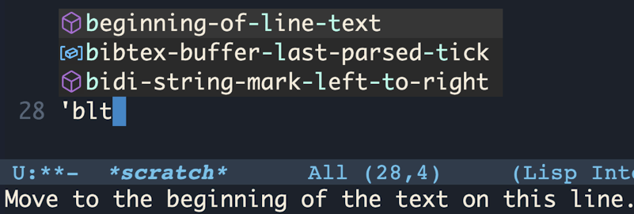
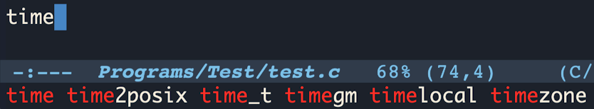
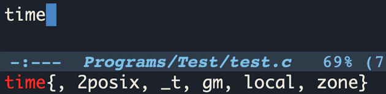
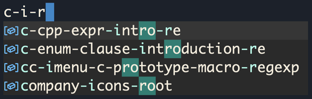

Next: Backends, Previous: Customization, Up: Company [Contents]
Company is packaged with several frontends and provides a predefined
set of enabled frontends. A list of the enabled frontends can be
changed by configuring the user option company-frontends.
Each frontend is simply a function that receives a command and acts accordingly to it: outputs candidates, hides its output, refreshes displayed data, and so on.
All of the Company frontends can be categorized by the type of the output into the three groups: tooltip-, preview-, and echo- frontends. We overview these groups in the first sections of this chapter. The sections that follow are dedicated to the ways the displayed candidates can be searched, filtered, and quick-accessed.
This group of frontends displays completion candidates in an overlayed tooltip (aka pop-up). Company provides three tooltip frontends, listed below.
This is one of the default frontends. It starts displaying a tooltip
only if more than one completion candidate is available, which nicely
combines — and it is done so by default — with
company-preview-if-just-one-frontend, Preview Frontends.
This frontend outputs a tooltip for any number of completion candidates.
This is a peculiar frontend, that displays a tooltip only if more than
one candidate is available, and only after a delay. The delay can be
configured with the user option company-tooltip-idle-delay.
A typical use case for plugging in this frontend would be displaying a
tooltip only on a manual request (when needed), as shown in the
following example:
(setq company-idle-delay 0
company-tooltip-idle-delay 10
company-require-match nil
company-frontends
'(company-pseudo-tooltip-unless-just-one-frontend-with-delay
company-preview-frontend
company-echo-metadata-frontend)
company-backends '(company-capf))
(global-set-key (kbd "<tab>")
(lambda ()
(interactive)
(let ((company-tooltip-idle-delay 0.0))
(company-complete)
(and company-candidates
(company-call-frontends 'post-command)))))
To change the tooltip frontends configuration, adjust the following user options.
An annotation is a string that carries additional information
about a candidate; such as a data type, function arguments, or
whatever a backend appoints to be a valuable piece of information
about a candidate. By default, the annotations are shown right beside
the candidates. Setting the option value to t aligns
annotations to the right side of the tooltip.
(setq company-tooltip-align-annotations t)
Controls the maximum number of the candidates shown simultaneously in
the tooltip (the default value is 10). When the number of the
available candidates is larger than this option’s value, Company
paginates the results.
(setq company-tooltip-limit 4)
Use this option to choose in which way to output paginated results. The default value is ‘scrollbar’. Another supported value is ‘lines’; choose it to show the quantity of the candidates not displayed by the current tooltip page.
(setq company-tooltip-offset-display 'lines)
This is one of the fancy features Company has to suggest. When this setting is enabled, no matter if a tooltip is shown above or below the point, the candidates are always listed starting near the point. (Putting it differently, the candidates are mirrored horizontally if a tooltip changes its position, instead of being commonly listed top-to-bottom.)
(setq company-tooltip-flip-when-above t)
Sets the minimum width of a tooltip, excluding the margins and the
scroll bar. Changing this value especially makes sense if a user
navigates between tooltip pages. Keeping this value at the default
0 allows Company to always adapt the width of the tooltip to
the longest shown candidate. Enlarging
company-tooltip-minimum-width prevents possible significant
shifts in the width of the tooltip when navigating to the
next/previous tooltip page. (For an alternate solution, see
company-tooltip-width-grow-only.)
This is another way to restrict auto-adaptation of the tooltip width
(another is by adjusting company-tooltip-minimum-width value)
when navigating between the tooltip pages.
This user option controls the maximum width of the tooltip inner area.
By default, its value is pseudo-limitless, potentially permitting the
output of extremely long candidates. But if long lines become an
issue, set this option to a smaller number, such as 60 or
70.
Controls the width of the margin on the sides of the tooltip
inner area. If company-format-margin-function is set,
company-tooltip-margin defines only the right margin.
(setq company-tooltip-margin 3)
An icon is an image or a text that represents a candidate’s
kind; it is displayed in front of a candidate. The term kind
here stands for a high-level category a candidate fits into. (Such as
‘array’, ‘function’, ‘file’, ‘string’,
‘color’, etc. For an extended list of the possible kinds,
see the user option company-text-icons-mapping or the variable
company-vscode-icons-mapping.)
Allows setting a function to format the left margin of a tooltip inner
area; namely, to output candidate’s icons. The predefined
formatting functions are listed below. A user may also set this
option to a custom function. To disable left margin formatting, set
the value of the option to nil (this way control over the size
of the left margin returns to the user option
company-tooltip-margin).
These functions utilize VSCode dark and light theme icon sets
4. The related two user
options are company-icon-size and company-icon-margin.
This function produces letters and symbols formatted according to the
company-text-icons-format. The rest of the user options
affecting this function behavior are listed below.
This function produces a colored Unicode symbol of a circle formatted
according to the company-dot-icons-format. Other user
options that affect the resulting output are listed below.
The following user options influence appearance of the text and dot icons.
Lists candidates’ kinds with their corresponding icons configurations.
A list of face attributes to be applied to the icons.
(setq company-text-face-extra-attributes
'(:weight bold :slant italic))
If this option is enabled, when an icon doesn’t have a
background configured by company-text-icons-mapping, then a
generated background is applied.
(setq company-text-icons-add-background t)
This is the default margin formatting function, that applies one of
the company-vscode-*-icons-margin functions if
‘vscode’ icons set is supported; otherwise applies a
company-text-icons-margin function.
Out-of-the-box Company defines and configures distinguished faces (see (emacs)Faces) for light and dark themes. Moreover, some of the built-in and third-party themes fine-tune Company to fit their palettes. That is why there’s often no real need to make such adjustments on a user side. However, this chapter presents some hints on where to start customizing Company interface.
Namely, the look of a tooltip is controlled by the
company-tooltip* named faces.
The following example hints how a user may approach tooltip faces customization:
(custom-set-faces '(company-tooltip ((t (:background "ivory" :foreground "MistyRose3")))) '(company-tooltip-selection ((t (:background "LemonChiffon1" :foreground "MistyRose4")))) '(company-tooltip-common ((t (:weight bold :foreground "pink1")))) '(company-scrollbar-fg ((t (:background "ivory3")))) '(company-scrollbar-bg ((t (:background "ivory2")))) '(company-tooltip-annotation ((t (:foreground "MistyRose2")))))
Frontends in this group output a completion candidate or a common part of the candidates temporarily inline, as if a word had already been completed 5.
This is one of the frontends enabled by default. This frontend
outputs a preview if only one completion candidate is available; it is
a good suit to be combined with
company-pseudo-tooltip-unless-just-one-frontend,
Tooltip Frontends.
This frontend outputs the first of the available completion candidates inline for a preview.
As the name of this frontend suggests, it outputs for a preview only a common part of the candidates.
The look of the preview is controlled by the following faces:
company-preview, company-preview-common, and
company-preview-search.
The frontends listed in this section display information in the Emacs’ echo area, (emacs)Echo Area.
This frontend is a part of the predefined frontends set. Its responsibility is to output a short documentation string for a completion candidate in the echo area.
This frontend outputs all the available completion candidates in the echo area.
It acts similarly to the previous frontend but outputs a common part of the candidates once for all of them.
This is the only echo frontends targeted setting. When
enabled, the output is truncated to fit the echo area. This setting
is set to t by default.
To apply visual changes to the output of these frontends, configure
the faces company-echo and company-echo-common.
By default, when company-mode is in action, a key binding C-s starts looking for matches to additionally typed characters among the displayed candidates. When a search is initiated, an indicator ‘Search: CHARACTERS’ is shown in the Emacs’ mode line.
To quit the search mode, hit C-g.
The value of this user option must be a function that interprets the
search input. By default it is set to the function
regexp-quote, with looks for an exact match. Company defines
several more functions suitable for this option. They are listed below.
Searches for words separated with spaces in the given order.
Searches for words separated with spaces in any order.
Searches for characters in the given order, with anything in between.
Search matches are distinguished by the company-tooltip-search
and company-tooltip-search-selection faces.
Candidates filtering is started by typing the default key binding C-M-s. Filtering acts on a par with the search (see Candidates Search), indicating its activation by the text ‘Filter: CHARACTERS’ in the mode line and influencing the displayed candidates. The difference is that the filtering, as its name suggests, keeps displaying only the matching candidates (in addition to distinguishing the matches with a face).
To quit the filtering, hit C-g. To toggle between search and filter states, use key binding C-o.
Company provides a way to choose a candidate for completion without having to navigate to that candidate: by hitting one of the quick-access keys. By default, quick-access key bindings utilize a modifier META and one of the digits, such that pressing M-1 completes with the first candidate on the list and M-0 with the tenth candidate.
If company-show-quick-access is enabled, tooltip- and
echo- frontends show quick-access hints.
(setq company-show-quick-access 'left)
To customize the key bindings, either do it via Customization Interface (see Customization Interface) or use the following approach:
(custom-set-variables
'(company-quick-access-keys '("a" "o" "e" "u" "i"))
'(company-quick-access-modifier 'super))
A modifier should be one of meta, super, hyper,
control.
The following example applies a bit of customization and demonstrates how to change quick-access hints faces.
(setq company-show-quick-access t) (custom-set-faces '(company-tooltip-quick-access ((t (:foreground "pink1")))) '(company-tooltip-quick-access-selection ((t (:foreground "pink1" :slant italic)))))
SVG images support has to be enabled in Emacs for
these icons set to be used. The supported images types can be checked
with C-h v image-types. Before compiling Emacs, make sure
‘librsvg’ is installed on your system.
The candidates retrieved according to
non-prefix matches (see Terminology) may be shown in full
after the point.
Next: Backends, Previous: Customization, Up: Company [Contents]